JUnit
org.mockito.ArgumentMatchers.*.
This has been added to the Java favorites in the preferences under Java > Editor > Content Assist > Favorites.
This way the organize imports action in the IDE will automatically add static imports for these classes if you use them in your tests.
Java Editor
StringBuilder (added in Java 1.5) rather than StringBuffer which has synchronized methods and is slower than using StringBuilder.
There is a sub-option where changes will only occur to local variables which is on by default. When this sub-option is on, changes will only occur to StringBuffer variables that are local to a method. When a method calls other methods with such variables or assigns to/from fields/parameters, the method contents will not be converted. It is permitted to append StringBuffer fields or parameters to local StringBuffer variables which can then still be converted to StringBuilder.
When the option is selected and the sub-option for local variables is off,all usage of StringBuffer in the selected files are changed to StringBuilder regardless of usage. It should be noted that in this case, the clean up will not track down non-selected classes and methods that are referenced and might require changes to compile successfully.
To apply the clean up, select the Use StringBuilder instead of StringBuffer check box on the Performance tab in your clean up profile. To specify just for local variables, select the Only for local variables check box found just below.

For the given code:
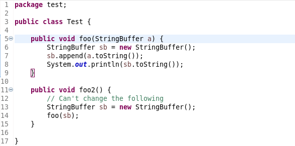
One gets:
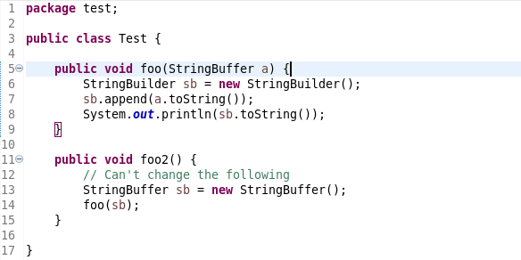
For the following loop:
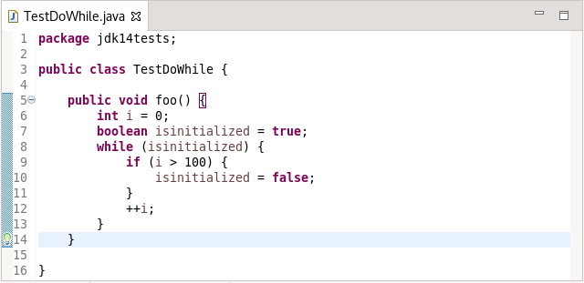
One is offered:
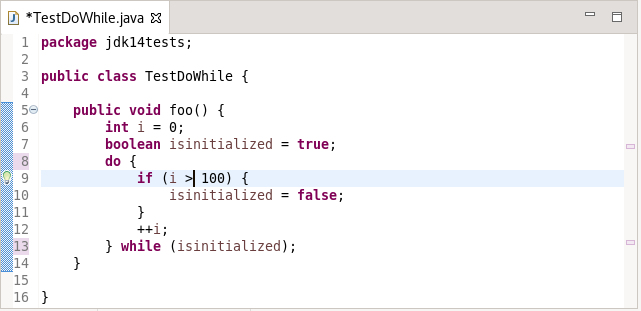
For the following class:
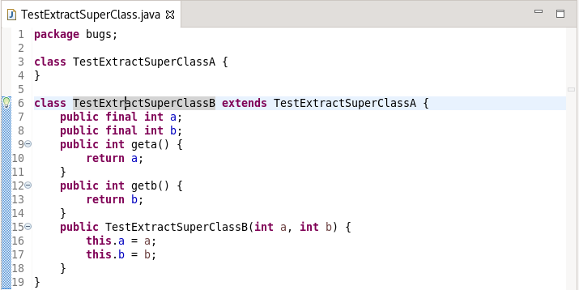
Extracting to Superclass and choosing all fields, one gets:
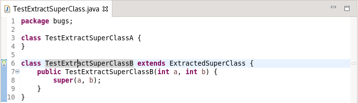
and
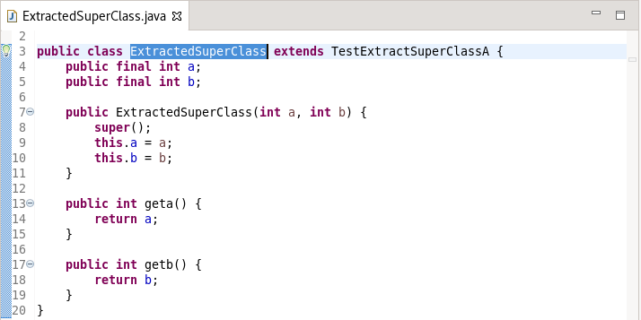
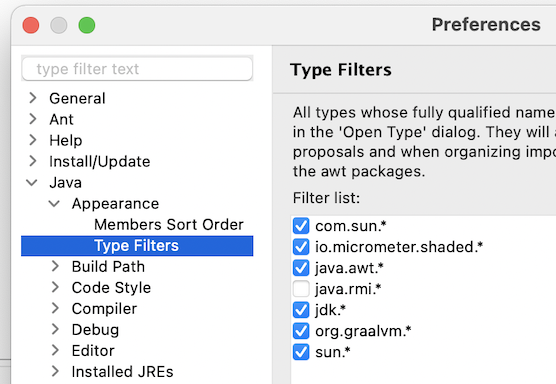
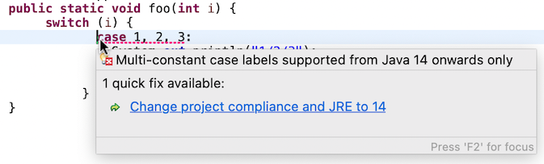
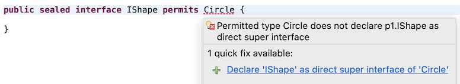
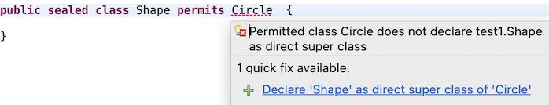
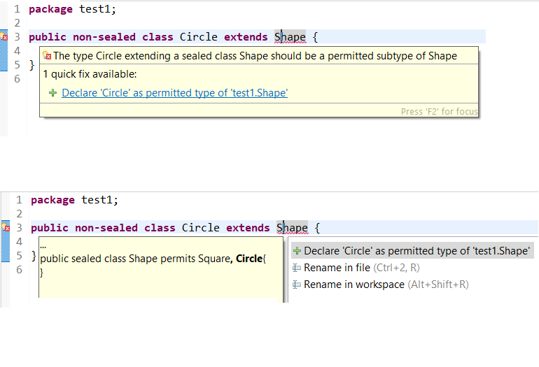
Java Compiler
Previously, all external annotations where declared per build path entry. I.e., whenever a project of yours uses a library for which external annotations exist, you would need to explicitly declare where the corresponding external annotations for this particular library can be found.
A new compiler preference has been added by which you can instruct the compiler to search for external annotations in all build path locations of the current project.
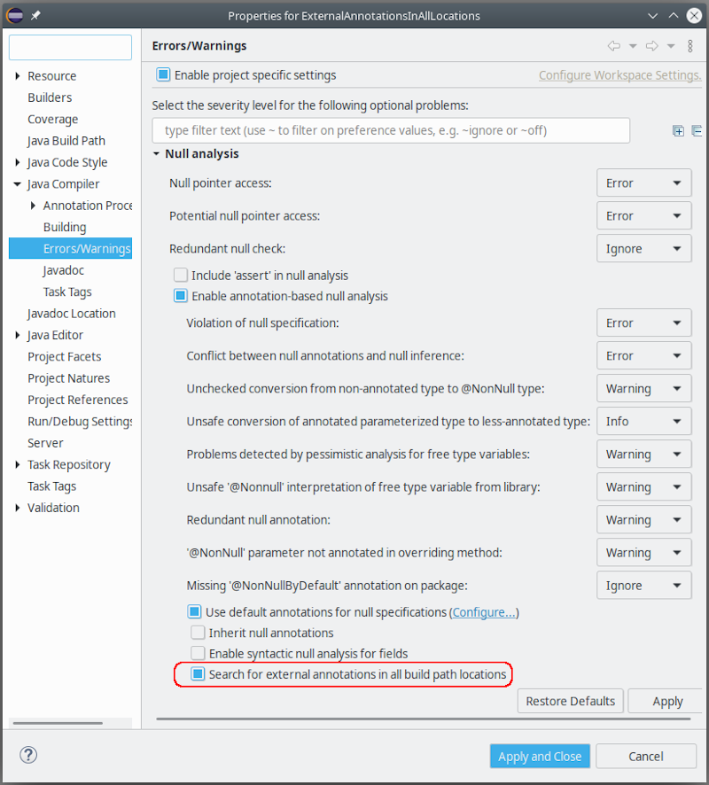
When enabled, this strategy will be applied to all class files encountered during compilation.
Some examples, where this option is useful:
- A project A contains generated sources (in a separate source folder), which are decorated using external annotations in the same project. When project A ships a jar containing also the external annotations, any client of A will immediately see the generated classes with their external annotations applied.
- When dedicated jars have been created, each containing external annotations for a set of libraries, you only have to add these annotation jars to your build path and enable the new option, without worrying which annotation jar corresponds to which individual dependency (dependencies). The compiler will match external annotations to class files with no further help.
For batch compilation a corresponding option already exists. To match the above strategy in CI-builds,
just add the following to the compiler command line (verbatim):
-annotationpath CLASSPATH
Debug
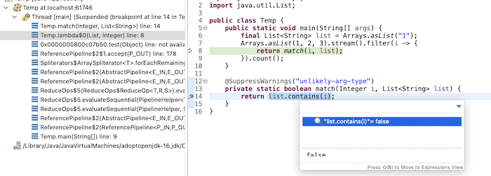